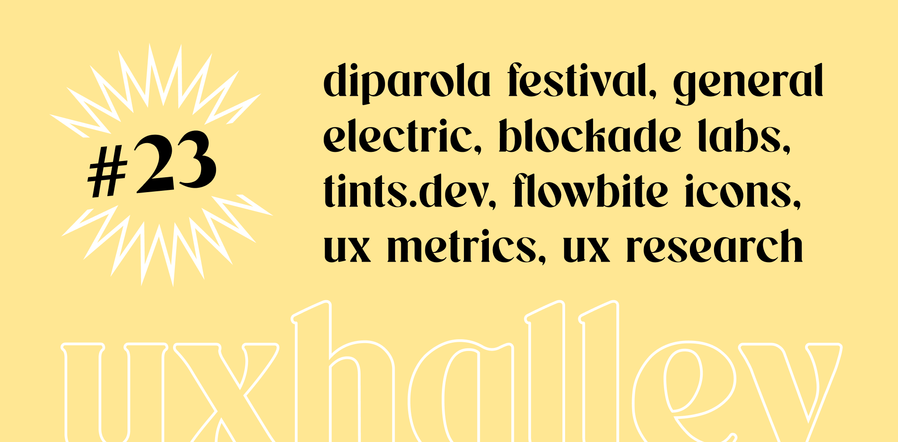

UX Halley, newsletter per designer
uxhalley, edizione #23
14 agosto 2023 — UX Halley: una newsletter bisettimanale che raccoglie news e links utili sulla UX. Le regole sono semplici: max 5 minuti di lettura; se ti interessa, lo approfondisci; se ti piace, lo condividi; a prescindere ci vediamo tra due settimane. Facile facile.
Immagine di copertina dell'edizione di UX Halley, newsetter per designer
Link per designer suggerito nell'edizione di UX Halley, newsletter per designer
color scales
Apri un nuovo file Figma e devi strutturare colori, stili, #variables. Hai due modi: a mano, o tramite qualche magia. Ecco, questa è una magia.
Link per designer suggerito nell'edizione di UX Halley, newsletter per designer
dynamic icons
E poi continuando, dopo i colori, devi gestire i visual e le #icone. Ecco, se il link prima era una magia, questo è una bomba. Un set di icone grande e flessibile!
Link per designer suggerito nell'edizione di UX Halley, newsletter per designer
design system per healthcare
GE la tocca piano con questo #designsystem dedicato al settore #healthcare. Molto interessante tutta la parte relativa a #datavisualization!
Link per designer suggerito nell'edizione di UX Halley, newsletter per designer
20 metriche di ux
Hai sicuramente sentito parlare di #roi e di #northstarmetric. Ecco, questo articolo elenca e approfondisce 20 metriche di UX da non perdersi.
Link per designer suggerito nell'edizione di UX Halley, newsletter per designer
60 modi per conoscere i tuoi utenti
Come posso fare #research in modo alternativo? Come posso superare i limiti del sistema in cui sto operando. Questo articolo prova a darti degli spunti utili.
Link per designer suggerito nell'edizione di UX Halley, newsletter per designer
di parola festival
Conosco Valentina Di Michele da qualche tempo, e non ne sbaglia una. Ho letto da lei di questo evento, posso solo che sponsorizzarlo con il sorriso!!
Link per designer suggerito nell'edizione di UX Halley, newsletter per designer
blockade labs
Puoi letteralmente diventare una divinità e creare mondi. Non ci credi? Clicca qui sotto e scopri questo tool magico che mixa #ai con la tua fantasia.